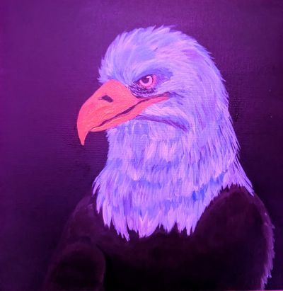
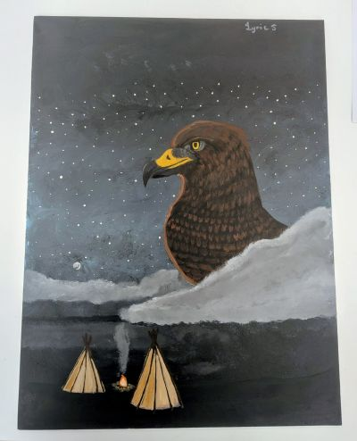
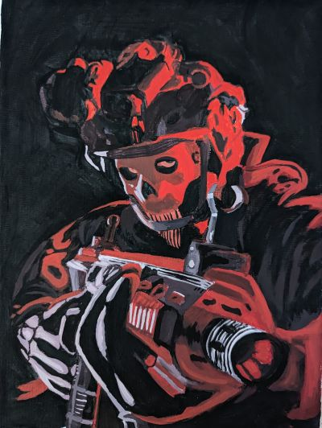
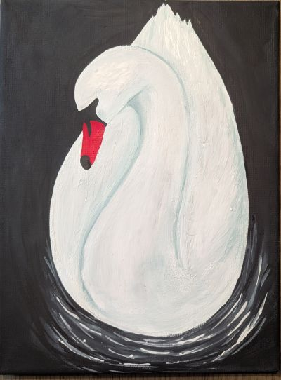

Lyric Shaye Stuart is a first year student taking the Multimedia Program, focusing on each of her classes to build up her skills and achieve the diploma in the hopes of success in the near future. During her free time, Lyric likes to do art like drawing and painting that takes about 6 or more hours depending on how big or detailed the piece of hers is. If she does not feel like doing art, she spends that time on her XBOX playing her favourite games either by herself or with her awesome group of online friends. Her goal after graduating the Multimedia Program is to get into the Game Development program so that she can work alongside her favourite gaming company whether she would be a character 3d modeler, concept artist or fixing bugs, if she is ambitious enough, she would do all three!
Some accomplishments that Lyric achieved throughout the years is working as an art facilitator for 2 years at an annual cultural campout run by her tribal council, connecting with others and with nature. Becoming salutatorian in high school, creating an 81 character illustration that took 48 hours to finish, and being a student in Lethbridge, Polytechnic.



